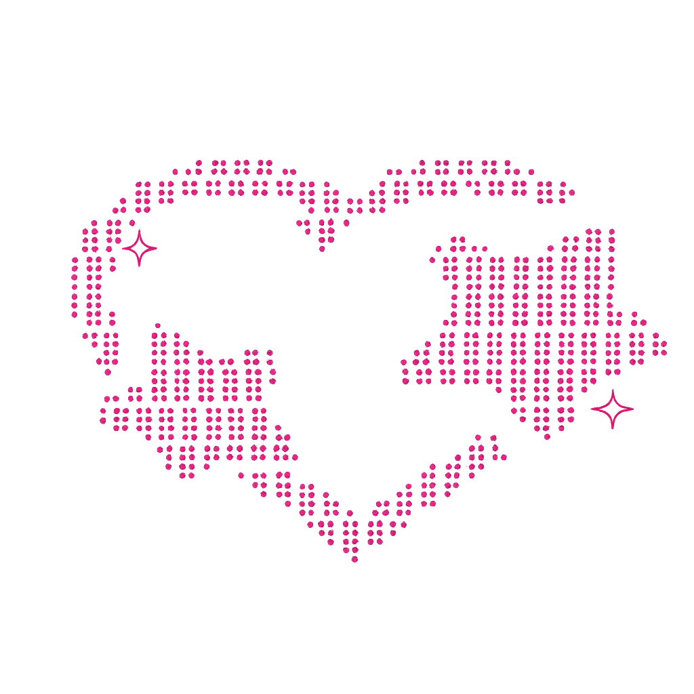

About Me
佐伯 小遥 / Saeki Koharu
お茶の水女子大学 人間文化創成科学研究科 理学専攻 情報科学コース 2年 戸次研究室
👩💻 Second-year master's student in Computer Science, Ochanomizu University, Bekki Lab.
🥁 Drummer who loves Jazz, Soul, Hiphop, Pops, Funk and Rock!
Skill
Languages
- Haskell
- Swift
- Python
- JavaScript
- Java
- HTML/CSS
Other Skills
- AWS
- Docker
- Git
- Office Software (PowerPoint, Word, Excel)
- Figma
- Drums
Research
#計算言語学 #自然言語処理 #理論言語学 #形式文法 #文法開発 #Haskell #Yesod
2025/3/13
佐伯小遥, 富田朝, 戸次大介. 日本語推論システムlightblueの開発環境構築に向けて. 言語処理学会第31回年次大会, 2025
❤️🔥 paper
under review
Koharu Saeki, Daisuke Bekki. Express: Taming the Branching Problem in Formal Natural Language Inference. Under review at ACL System Demonstration 2026
Project
Education
2018/04 - 2021/03
朋優学院高校
Hoyu Gakuin High School, Tokyo, JAPAN
I graduated as a scholarship student.
2021/04 - Present
お茶の水女子大学 理学部 情報科学科
Bachelor's degree of Science from Ochanomizu University, Tokyo, JAPAN
2024/08 - 2024/09
EF Language School in Honolulu, Hawaii
2025/04 - (expected) 2027/03
お茶の水女子大学大学院 人間文化創成科学研究科 理学専攻 情報科学コース
Master's degree of Science from Ochanomizu University, Tokyo, JAPAN
Experience
2023/10 - 2024/08
Head of Accounting/Websites Coding @ Overfocus
- Accounting
I created a financial system as one of the early members of Overfocus.
- Websites Coding
I was been in charge of HP&LP coding.
2023/08 - 2024/03
I was selected as 1 of 41 students to pursue the Waffle College Tech Career Course where I learned web programming and the software development cycle from scratch in 8 months.
I developed Meishi Kakumei / 名刺革命 in a team of 5 in a fast-paced environment with mentorship from industry leaders which were presented to 50+ people.
We utilized JavaScript, PHP, CSS, MySQL, HTML, and Figma to develop Meishi Kakumei / 名刺革命 to help you solve the following four problems:
・business cards are discarded when you change departments,
・it is difficult to manage the business cards you receive,
・printing costs are high,
・and most students do not have business cards
while collaborating and peer programming with team members.
❤️🔥 Github Repository
❤️🔥 Demo Video
2024/06 - Present
iOS developement mentor @ Life is Tech!
I mentor iOS app development to middle and high school students through weekly schools and camps held during long vacations.
2024/07 - 2025/6
iOS developer @ Nikkei / 日本経済新聞社
I joined a iOS team and developed 日経電子版. I also organized a event for female students studying Computer Science.
2025/08 - 2025/09s
Cloud Support Engineer @ Amazon Web Service
I joined AWS as an intern engineer
2025/09 - 2025/10
Software Engineer @ Rakuten
I joined Rakuten as an intern engineer
2025/10 - Present
Teaching Assistant @ Ochanomizu University
Class: 位相空間論, ことばと世界
2025/11 - Present
Software Engineer @ CyberAce
I've joined CyberAce as an intern engineer
Other Activities
2021/11 - 2022/11
Representative @ Todai Onkan / 東大音感
I was a representative of the web section, and I created and edited over 500 videos in one year. As an executive, I was the center of more than 200 members of the club and managed the live performances. Through weekly executive meetings, we talked and thought a lot about how to improve the community.
2022/07, 2023/07, 2024/07
Volunteer @ Shimokitazawa Festival / 下北沢音楽祭
2024/03
Graduation Hackathon @ Waffle College
My team developed a web app called Meishi Kakumei / 名刺革命, and won a business award.
❤️🔥 Github Repository
❤️🔥 Demo Video
2024/03
Mentor @ Waffle Camp at Kobe
I helped middle and high school students create websites.
2024/04
TA(Teaching Assist) @ Waffle College Entry Course
I helped female college students who had never programmed before develop apps using Thunkable.
2024/05 - Present
Web Developer as a volunteer @ Discover Nikkei
2024/04 - 2024/06
2024/08
Hardware Hackathon @ Google Japan
2024/09
Interviewed by a music writer Dr.Funkshitteru about my band
2024/12
Generative AI Hackathon @ TOMOSHIBI / 灯
2025/04
iOS MokuMoku Hackathon @ Mercari
2025/06
Mentor @ Waffle Camp at Niigata
2025/06
1st award 🥇 @ Progate Women's ハッカソン powered by SmartHR